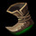

Jaune : Ward basique
Vous donne de la vision pendant un laps de temps (qui augmente avec votre niveau), se détruit en 3 coups. La ward est invisible, à moins d'être révélée par le trinket rouge ou autre habilité/objet.
La plupart des items de LoL s'achètent sur la durée, c’est-à-dire qu’au premier retour à la base, on achète une première partie de l’objet que l’on souhaite acheter (ce qui donne un petite partie des effets de l’item en question), puis après avoir amassé quelques gold en plus, le joueur achète une seconde partie de l’objet, etc. Cela peut évidemment varier en fonction de la partie, si vous faites beaucoup de kills, vous pourrez prendre plus d’objet et inversement.
Nous allons donc lister quelques objets avec leur effets.
À ces items terminés viennent s'ajouter des bottes 
Elles vous permettront de vous déplacer plus rapidement, et peuvent être améliorées pour des statistiques bonus supplémentaires.
Enfin, vous disposez également de trinkets. Ils occupent un emplacement d'item spécial et sont utiles pour la vision. En effet, ils révèlent la zone autour d'eux, levant ainsi le brouillard de guerre dans un court rayon.
Vous donne de la vision pendant un laps de temps (qui augmente avec votre niveau), se détruit en 3 coups. La ward est invisible, à moins d'être révélée par le trinket rouge ou autre habilité/objet.
Révèle les wards cachées, ainsi que tout piège ou unitée cachée. Actif pendant dix secondes.
Fonctionne comme la ward basique avec un rayon beaucoup plus grand. Cependant, cette ward n'est pas cachée à l'ennemi et il peut la détruire en un coup.
Cet objet n'est pas un trinket ; il coûte 75 golds et occupe un emplacement d'item. La pink ward produit le même effet de vision que la ward basique. Son avantage est qu'elle reste active jusqu'à être détruite ou remplacée (un joueur ne peut avoir qu'une pink ward active à la fois).